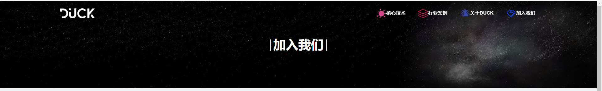
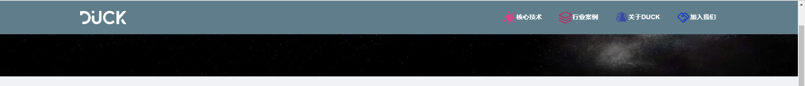

摘要
基于react的框架开发一个顶部固定滑动式的酷炫导航栏，当导航栏置顶时，导航栏沉浸在背景图片里；当鼠标滑动滚轮时，导航栏固定滑动并展示下拉样式。
JS部分
相关技术栈：react、antd、react-router。详细的技术栈应用请参考官方文档的使用说明。
* 展示主页App.jsx组件代码
import React from 'react';
import './App.css';
import { Link, Route } from 'react-router-dom';
import { Layout } from 'antd';
//引入导航栏相对应的组件
import Home from './components/Home/Home';
import CoreTechnology from './components/Technology/Technology';
import Case from './components/Case/Case';
import About from './components/About/About';
import Join from './components/Join/Join';
const { Content } = Layout;
class App extends React.Component {
//在componentDidMount生命周期中添加window的handleScroll滑动监听事件
componentDidMount() {
window.addEventListener('scroll', this.handleScroll);
}
//定义handleScroll事件函数
handleScroll =(e)=>{
var header = document.getElementById('header'); //定义一个dom节点为'header'的header变量
if(window.pageYOffset >= 80){ //if语句判断window页面Y方向的位移是否大于或者等于导航栏的height像素值
header.classList.add('header_bg'); //当Y方向位移大于80px时，定义的变量增加一个新的样式'header_bg'
} else {
header.classList.remove('header_bg'); //否则就移除'header_bg'样式
}
}
render() {
return (
<div className="page" id="page">
<Layout>
<div className="header" id="header"> //导航栏div
<div className="brand">
<Link to="/">
<img src={require("./img/dkgw_logo@01.png")} alt="大可logo" width="" height="32"/>
</Link>
</div>
<div className="nav">
<ul>
<li>
<Link to="/technology">
<img src={require("./img/dkgw_hxjs.png")} alt="核心技术" width="32" height="32"/>
核心技术
</Link>
</li>
<li>
<Link to="/case">
<img src={require("./img/dkgw_hyal.png")} alt="行业案例" width="32" height="32"/>
行业案例
</Link>
</li>
<li>
<Link to="/about">
<img src={require("./img/dkgw_gywm.png")} alt="关于DUCK" width="32" height="32"/>
关于DUCK
</Link>
</li>
<li>
<Link to="/join">
<img src={require("./img/dkgw_jrwm.png")} alt="加入我们" width="32" height="32"/>
加入我们
</Link>
</li>
</ul>
</div>
</div>
<Content className="content" id="content">
<Route path="/" exact component={ Home }/>
<Route path="/technology" component={ CoreTechnology }/>
<Route path="/case" component={ Case }/>
<Route path="/about" component={ About }/>
<Route path="/join" component={ Join }/>
</Content>
</Layout>
</div>
);
}
}
export default App;
CSS部分
为了让导航栏置顶时悬浮在背景图上，需要给导航栏置特定的css样式。
position: fixed;
box-sizing: border-box;
display: flex;
justify-content: space-between;
align-items: center;
transition: 0.5s;
z-index: 1000;* 主页App.css样式代码
@import '~antd/dist/antd.css'; //引入antd样式
@import url('https://fonts.googleapis.com/css?family=Roboto'); //引入谷歌字体样式
/* {通用样式开始} */
* {
margin: 0;
padding: 0;
font-family: Arial, Helvetica, sans-serif;
-webkit-box-sizing: border-box;
-moz-box-sizing: border-box;
box-sizing: border-box;
}
/* {通用样式结束} */
/* {导航栏基础样式} */
.header
{
position: fixed;
top: 0;
left: 0;
width: 100vw;
height: 5rem;
padding: 0 10vw;
box-sizing: border-box;
display: flex;
justify-content: space-between;
align-items: center;
transition: 0.5s;
z-index: 1000;
}
{/*{导航栏新样式}*/}
.header.header_bg
{
background: #607d8b;
}
.nav ul
{
margin: 0;
padding: 0;
display: flex;
}
.nav ul li
{
list-style: none;
}
.nav ul li a
{
color: #fff;
padding: 0 20px;
font-size: 1.1em;
text-decoration: none;
font-weight: bold;
}
.brand a
{
color: #fff;
font-size: 1.1em;
text-decoration: none;
font-weight: bold;
}
基本效果图
导航栏置顶时：

导航栏下滑一定像素时：

最后
以上就是小编在实战开发中的一个小分享，如有任何说的不对的地方，欢迎大家对我指指点点！